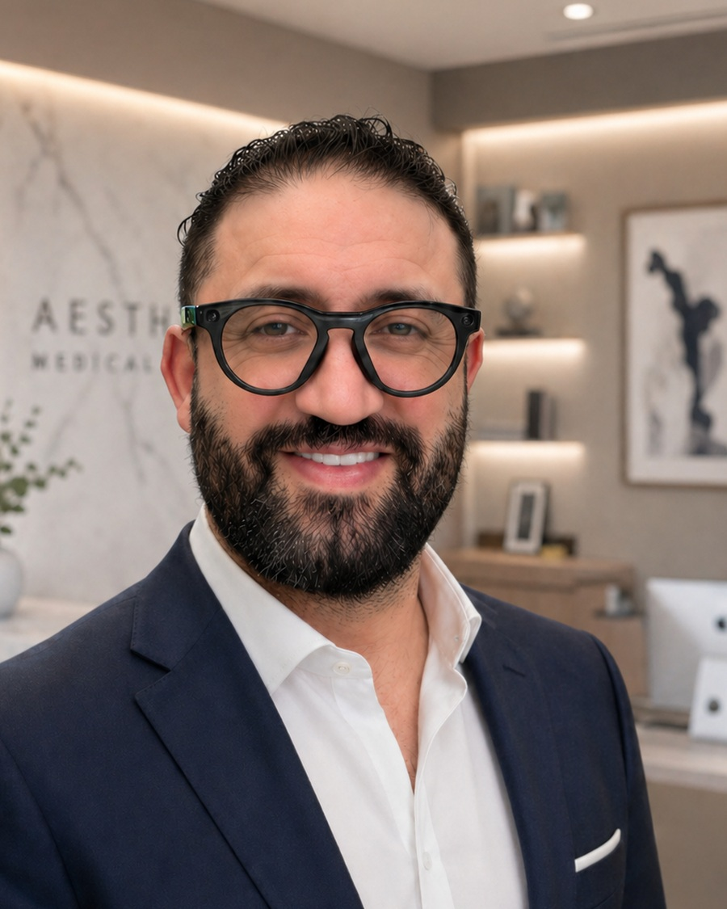
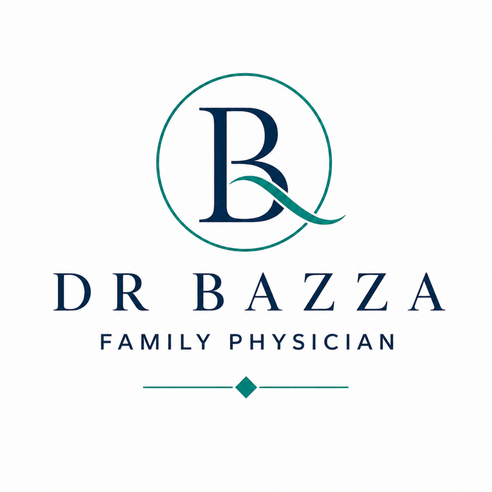

OYA Clinic
Primary care, clinic booking, forms, contact, and patient pathways.
Open OYAThe professional home of Dr. Bazza — connecting clinical care, DBFSP, patient education, IMG transition support, and exam-focused clinical reasoning resources.


Primary care, clinic booking, forms, contact, and patient pathways.
Open OYAPersonal profile, lifestyle, projects, and non-clinical identity.
Open AhmedBazza.comConnected healthcare resource and external partner link.
Open Medicine PlaceTDM course, QBank, IMG transition, and exam preparation.
Explore EducationA professional profile built around clinical clarity, functional recovery, and meaningful patient care.
Dr. Bazza is a family physician in Edmonton with a focused professional interest in whole-person, function-focused care. His clinical work is shaped by a practical question: what is limiting the patient’s function, safety, stability, and ability to move forward?
His care style is structured, direct, and patient-centred. He works with patients who may be facing overlapping concerns such as mental health symptoms, addiction-related complexity, chronic pain, sleep disruption, medication complexity, disability, and functional impairment.
Through FFCCC — Function-Focused Controlled Medication and Complex Care — Dr. Bazza emphasizes safety, stabilization, realistic goals, medication review, harm reduction when relevant, and shared-care communication. The goal is not only symptom reduction, but a practical plan that helps patients regain meaningful daily function.
Dr. Bazza is also developing a clinical education platform focused on exam preparation, TDM-style clinical reasoning, QBank-based learning, and helping international medical graduates transition into the Canadian healthcare system with confidence, structure, and professionalism.
Function-Focused Controlled Medication and Complex Care.
Care plans are framed around what the patient needs to do, restore, protect, or sustain in daily life.
Medication decisions consider risk, benefit, monitoring, prescribing standards, and patient-specific safety.
Structured next steps support stability across pain, mood, sleep, addiction, and function.
Clear communication supports patients, pharmacies, consultants, and referring clinicians.
A premium education platform being prepared for clinical exam preparation, therapeutic decision-making, and IMG transition to the Canadian medical system.